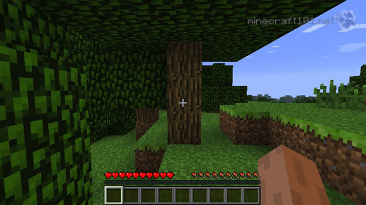
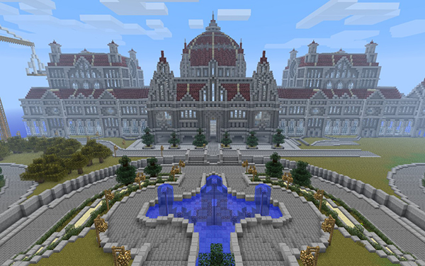
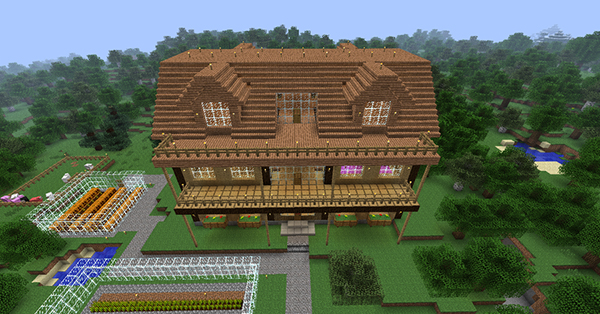

Minecraft. The game known around the world. If you talk to anyone whose worth their salt, they will at least know what Minecraft is or they've sat down and played a little of it. Minecraft is a game about building, exploring and surviving. When you first load up a game, you are dropped into a brand new world, untouched by human hands.
The first thing people notice about Minecraft is the graphic. As you can see in the image above, everything is made of blocks. The whole game is blocks stacked on more blocks. At first, this sounds crazy. Who would want to play a game that is basically playing with blocks? But when you really get into it and play around with the world, you realize that you are playing with what is basically the adult version of legos! And who didn't like legos? Well... except if you stepped on them.
Minecraft has three game modes that you can choose from; Survival, Creative, and Adventure modes. In Creative mode, you can let your creativity flow freely. You have access to an unlimited supply of blocks and you are limited only but what you can imagine. Here's good example of what can come from creative mode:
You can find some pretty amazing creations, everything from single castles to giant cityscapes, even Minas Tirith from Lord of the Rings! (No joke, look it up, it's there!) The second mode that is available to play with is for those who want a little more danger in their life. Survival mode is the default mode and it drops the player into a brand new world nothing but their fists and their wits. The player must gather materials and find/build a shelter or a weapon before night falls. Once the moon (which is also square) rises, creatures begin to spawn. Zombies, spiders, skeletons, and the terrifying creepers roam the land at night and if you aren't prepared for it, you will die... horribly.
Adventure mode is the last game mode. This game mode is an interesting one. In creative mode, creators can made entire maps that tell a story. These maps are called Adventure Maps and are posted the forums across the internet to challenge a player's skills or just to show off awesome stuff that someone else has built. In adventure mode, the creator of the map can limit what the player of the map is able to do. They can make it so the player can't break certain blocks, or give them certain equipment to help in their quest. Adventure mode makes the Minecraft world all the more interesting if you get bored with survival or creative mode.
For those who play better with others, Minecraft can also be played online with literally thousands of other players. The Minecraft online community is probably one of the largest communities on the internet, which is rather surprising considering that it is not that old of a game and even more so because its an indy game! Speaking of the online community, if the simple graphic style is making you shy away from this game, the community has got you covered. Minecraft's creators, Mojang, created Minecraft to be customizable. Mods (modifications) were designed to be easy to make and easy to use. There are so many texture packs out there, I guarantee that you will find one that suits you.
On the topic of Mods, texture packs are not the only Mods created for Minecraft. Mod creators have made literally thousands of Mods that add new items, animals, and even entirely new game mechanics! If you ever get bored of Vanilla (normal) Minecraft, browse the Mods. There is sure to be something that interests you there.
Minecraft is a game that any gamer of any age can get into. It has something for everybody. Once you get passed the graphics, this game can pull you in and keep you in for a long long time. And with new content coming out all the time from Minecraft's creator, Mojang, there's always something new to discover. So what are you waiting for? Get yourself a copy of Minecraft and build a house!
Posted: November 7th, 2013